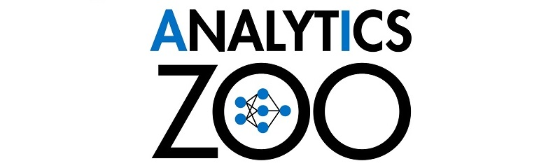
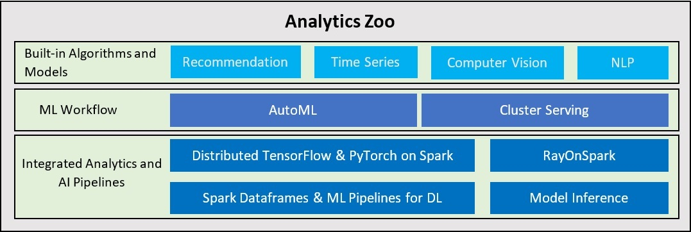

Overview

A unified Data Analytics and AI platform for distributed TensorFlow, Keras and PyTorch on Apache Spark/Flink & Ray
What is Analytics Zoo?
Analytics Zoo seamless scales TensorFlow, Keras and PyTorch to distributed big data (using Spark, Flink & Ray).

-
End-to-end pipeline for applying AI models (TensorFlow, PyTorch, OpenVINO, etc.) to distributed big data
- Write TensorFlow or PyTorch inline with Spark code for distributed training and inference.
- Native deep learning (TensorFlow/Keras/PyTorch/BigDL) support in Spark ML Pipelines.
- Directly run Ray programs on big data cluster through RayOnSpark.
- Plain Java/Python APIs for (TensorFlow/PyTorch/BigDL/OpenVINO) Model Inference.
-
High-level ML workflow for automating machine learning tasks
- Cluster Serving for automatically distributed (TensorFlow/PyTorch/Caffe/OpenVINO) model inference .
-
Scalable AutoML for time series prediction.
-
Built-in models for Recommendation, Time Series, Computer Vision and NLP applications.
Why use Analytics Zoo?
You may want to develop your AI solutions using Analytics Zoo if:
- You want to easily apply AI models (e.g., TensorFlow, Keras, PyTorch, BigDL, OpenVINO, etc.) to distributed big data.
- You want to transparently scale your AI applications from a single laptop to large clusters with "zero" code changes.
- You want to deploy your AI pipelines to existing YARN or K8S clusters WITHOUT any modifications to the clusters.
- You want to automate the process of applying machine learning (such as feature engineering, hyperparameter tuning, model selection, distributed inference, etc.).
How to use Analytics Zoo?
- Check out the Getting Started page for a quick overview of how to use Analytics Zoo.
- Refer to the Python, Scala and Docker guides to install Analytics Zoo.
- Visit the Document Website (mirror in China) for more information on Analytics Zoo.
- Check the Powered By & Presentations pages for real-world applications using Analytics Zoo.
- Join the Google Group (or subscribe to the Mail List) for more questions and discussions on Analytics Zoo.